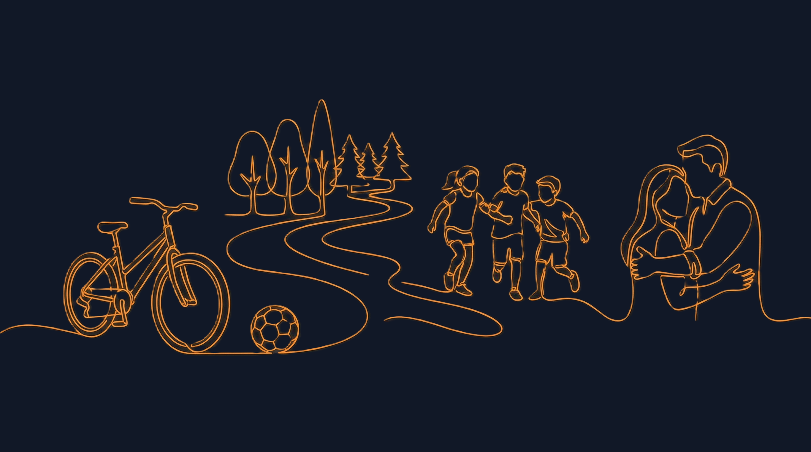
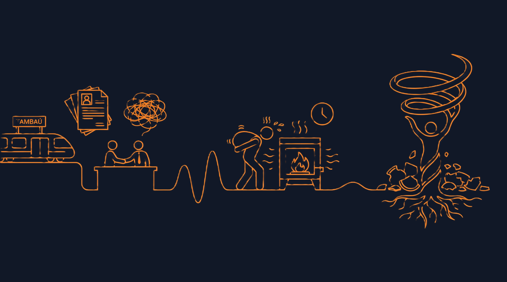
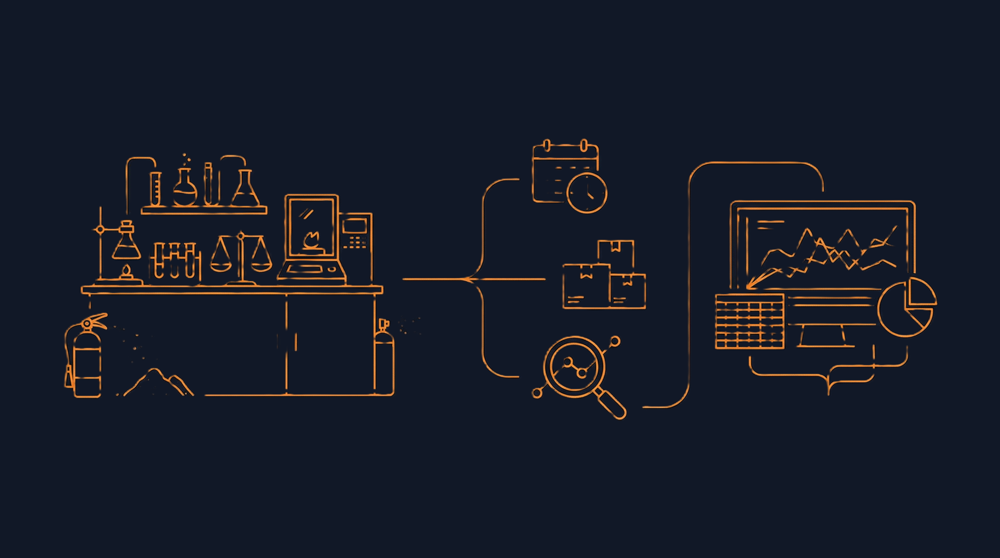
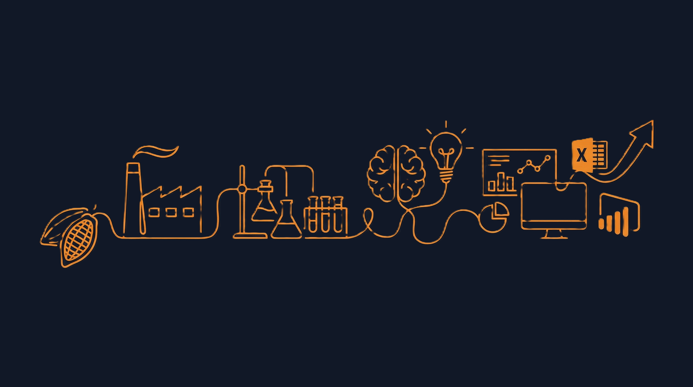
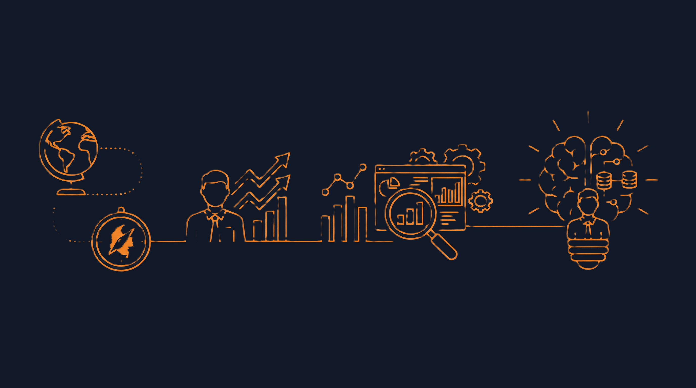
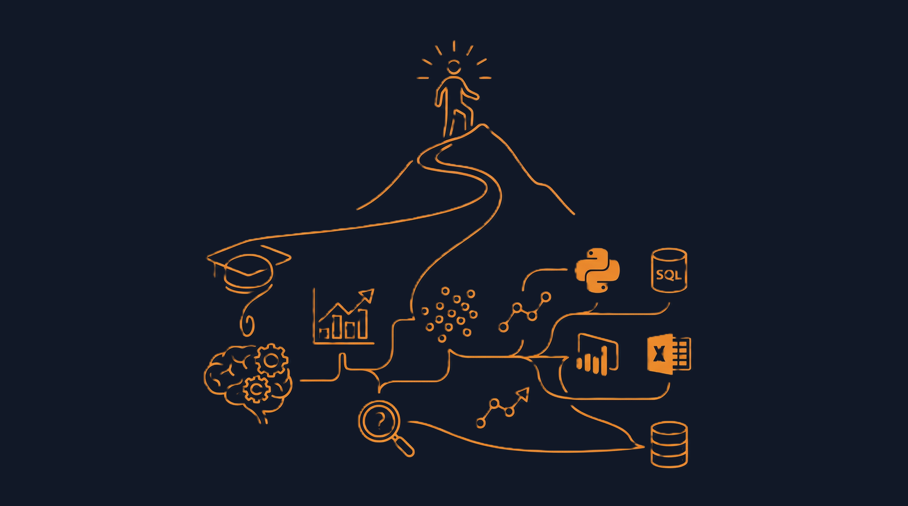

Curiosidade Analítica
Questiono “por quê?”, “como?” e “e se?”. Dados sem contexto não viram decisão.
Analista de Dados & BI
Soluções de ponta a ponta
Do dado bruto à visualização final.
Com foco em clareza, impacto e tomada de decisão.
Quem sou eu, minha trajetória até aqui, meus desafios e realizações, meus hobbies e interesses.
Cresci em Tambaú, uma cidade pequena do interior paulista, onde a vida acontecia na rua: bicicleta, futebol, trilhas, árvores e muita liberdade.
Foi uma infância bem “raiz”, com família e amigos sempre por perto — e isso moldou muito do meu jeito de viver.

Depois do ensino médio fui pra Química, porque eu era fascinado pelo mundo microscópico.
Comecei em Itajubá e depois voltei pra Ribeirão Preto, onde finalizei na USP e me formei em Química Forense (2018).
No fim da faculdade eu entendi que amava a Química pela curiosidade — e não necessariamente pra trabalhar com isso.
Voltei pra Tambaú e passei aquele período clássico de recém-formado: currículo, entrevistas e ansiedade.
Consegui um trabalho temporário como analista de qualidade numa cerâmica, e foi pesado de verdade: calor absurdo, esforço físico e uma rotina bem puxada.
Foi um período difícil, mas que me ensinou muito sobre resiliência.

Um mês depois, entrei numa indústria de pó de extintor de incêndio como analista de qualidade.
Aí sim: laboratório completo, equipamentos, análises e responsabilidade real.
Além de executar as análises, eu precisava organizar rotina, estoque, prazos e interpretar resultados.
E foi aí que meu gosto por planilhas, gráficos e organização de dados virou parte do trabalho.

Depois, fui pra uma indústria de processamento de cacau como analista de Pesquisa & Desenvolvimento.
Além do laboratório, eu precisei aflorar o lado criativo pra testar, melhorar e criar métodos.
Nesse ponto eu senti que só o básico de dados não bastava e comecei a estudar mais: Excel, Power BI e ferramentas analíticas pra subir o nível do meu desempenho.

Quase dois anos depois surgiu a oportunidade de entrar no AmorSaúde como consultor de operações internacional, olhando performance das unidades da Colômbia e ajudando na melhoria dos indicadores.
Meu trabalho virou praticamente 100% análise de dados, e ali eu construí meu primeiro BI em Power BI do zero. A entrega foi tão bem recebida que fui chamado pra integrar o time de Inteligência de Negócios.

Com o tempo eu fui me destacando e percebi que era esse caminho que eu queria pra vida.
Em 2023 comecei meu MBA em Data Science & Analytics (USP/ESALQ), concluído em 2025.
Desde então, fui aplicando coisas mais avançadas no dia a dia: análises preditivas, modelos de machine learning, segmentação/clusterização, estudos de correlação e testes de hipóteses, além de aprofundar o “arroz com feijão” muito bem feito: Python, SQL, Power BI, Tableau, Excel e bancos de dados.

Dados só fazem sentido quando geram entendimento e ação.
Curioso, disciplinado e orientado a aprendizado contínuo. Levo a simplicidade do interior junto com uma trajetória construída na base do esforço, adaptação e escolhas conscientes. Meu objetivo é sempre o mesmo: construir algo que faça sentido, gere impacto e evolua com o tempo.
Showcase dos principais trabalhos que refletem minha abordagem: do problema à solução.
Cada projeto combina análise, tecnologia e impacto mensurável no negócio.
Do dado bruto à decisão estratégica: um panorama do meu processo, ferramentas e mentalidade em Análise de Dados & BI.
Antes de falar de ferramentas, o que muda o jogo é a forma de pensar: contexto, hipótese, clareza e impacto.
Questiono “por quê?”, “como?” e “e se?”. Dados sem contexto não viram decisão.
Começo pelo problema de negócio. Ferramenta é meio, não fim.
Entendo dependências entre métricas, processos e impactos em cascata.
Transformo análises complexas em insights claros e acionáveis.
Dados podem vir de bancos, APIs, arquivos, sistemas legados, web scraping e integrações.
Limpeza, padronização e estruturação: transformar dado bruto em informação utilizável.
Exploração para identificar padrões, anomalias, correlações e hipóteses com impacto no negócio.
Transformo insights em visualizações claras e acionáveis, com foco em narrativa e usabilidade.
Garantir qualidade, atualização, governança e evolução contínua das soluções ao longo do tempo.
DW: dados estruturados e prontos pra análise. Data Lake: dados brutos em qualquer formato (mais flexível, exige processamento).
ETL transforma antes de carregar. ELT carrega e transforma depois (comum em cloud pelo poder de processamento).
OLTP é transacional (muita escrita). OLAP é analítico (muita leitura e agregação).
Star Schema: fatos no centro e dimensões ao redor. Snowflake: dimensões mais normalizadas.
SQL opera em tabelas (set-based). DAX opera com contexto de filtro no modelo tabular (cálculos dinâmicos em BI).
Conectar números a decisões: narrativa, foco no objetivo e visualização que guia a leitura.
Trajetória acadêmica que une base científica, visão estratégica e expertise em dados.
Do bacharelado em Química às especializações em Data Science e Gestão de Negócios.
Principais conquistas acadêmicas e profissionais que fundamentam minha trajetória em dados.
Formação contínua em tecnologias, metodologias e ferramentas do ecossistema de Data Science & BI.
Jornada literária através de mundos ficcionais, conhecimento técnico e desenvolvimento pessoal.
Cada livro representa uma perspectiva única e aprendizados que moldaram minha forma de pensar.